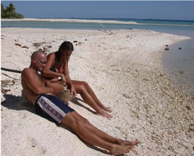
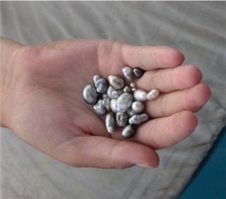
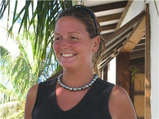

Tuamotus er omtalt i bøkene som "The Dangerous Islands", dei farlege øyene. Namnet fekk dei fordi det er vanskeleg å navigere mellom dei lave øyene, som ikkje strekker seg høgare enn den høgaste palmen. Øygruppa består av 77 atollar, lagunar omringa av øyrekker. Atollane ligg utsatt og er ubeskytta for syklonar som av og til kan herje i området. Ferskvatn kan vere vanskelg å oppdrive. Likevel er det små landsbyar på mange av øyene. Dei lever under enkle kår basert på perledyrking, fiske, og det som fly og fraktebåtar tar med seg til øyene.

Dei fleste atollane har ei eller fleire opningar, der båtar kan smette inn på lavvatn. Om vi ikkje planlegger godt, riskikerer vi å møte opptil 9 knops motstraum i passet. Ikkje heilt ideelt for ein 25 år gamal Volvo Penta, med slitne 23 hestekrefter.Etter fire døger på havet, klarar vi å rekke tidevatnet godt nok til å smette inn i lagunen Kauehi. Vind og straum er på kollisjonskurs, og skaper nokre interessante bølgjer i passet. Suedama er førstemann gjennom. Darren klatrar opp i masta for halde utkikk. Han er eit syn der han klamrar seg fast, medan bølger og straum hiver båten fram og tilbake. Som kjent vert båten sine rørsler noko forsterka 10 meter over dekk… Snart høyrer vi han på VHF'en, "This is piece of cake". Vi mobiliserer Petrell sine hestekrefter, og lukker lukene. Bølgene slår over dekk. Det varar ikkje mange minutta før vi er gjennom. Passet er passert. Lagunen ligg føre oss som eit nytt lite hav - med kvite strender og svarte perler.
På skattejakt
Vi slepper ankeret i ei bukt på sørsida. Eg sit på baugen og ser ankeret falle nedover i det blå vatnet. Snart landar det i mjuk sand, 10 meter der nede. Vi trekker på oss uniformen, våtdrakt, snorkel og symjeføter. Det er mykje som må utforskast, og er det ikkje her dei svarte perlene høyrer til? Med perler i blikket og snorkel i munnen kretsar vi rundt korallar som sultne hai. Vi dykkar ned og finn vår første oyster. Deretter ein til. Snart ligg det 10 skjell i gummibåten.
Trøytte og fulle av forventningar set vi oss på stranda. Faktisk dukkar det opp ei lita perle i om lag alle skjella våre. Ajaj, så fantastisk! Når den verste ekstasen har lagt seg og vi får

pusten att etter alle "wow" og "ah", innhentar realiteten oss att. Vi ser at perlene vi har funne har mykje til felles med godt brukte tyggegummi… Ok, dei er kanskje ikkje svarte, runde og skinande -men vi fann dei sjølv, og det har jo absolutt sin sjarm...Etter tidspress og lange havstrekk, var vekene på Kauehi reine rekreasjonen. Hundrevis av sjømil frå næraste båtbutikk, internettkafê, folk og fe, innsåg vi med eit lite sukk, at her er det ikkje anna å gjere enn vere Robinson Crusoe, knekke kokosnøtter, brenne bål på stranda og flire i skjegget.
Jakten på perlefarmen
Tidleg ein morgon tar eg beina fatt. Eg er på jakt etter ein perlefarmer som kan vise oss korleis dei dyrkar perler og ikkje minst korleis perler skal sjå ut. Perlene vi fann på Kauehi, var i viltveksande oysters, og var meir interessante enn lekre. Eg ruslar langst vegen, får haik av den lokale bakaren som kan fortelle meg vegen til Atu. Atu har ein liten perlefarm nokre hundre meter utanfor stranda, og vil svært gjerne vise oss farmen sin.
Nokre timar seinare hoppar vi i sjøen med snorkel og maske. Atu peikar og forklarar. Oystersen, som han kallar perlemora, får ei lita ferskvatnperle planta i seg. Rundt denne bygger ho ei svart perle. Etter omlag to år, henter Atu oystersene, tar ut perla, og plantar ei ny fesrkvatnperle i perlemora og heng ho ut att. Heile prosessen kan ikkje ta meir enn eit minutt, som er maksimum levetid for ei perlemor over vatn.
Atu fortel at halvparten av oystersene produserer perler som han kan ta vare på. Dei resterande oystersene har anten dårlege perler, eller ingen perle. Dette kjem av at perlemora avviser den vesle ferskvatnperla.
47.000 $ rundt halsen
Han inviterer oss heim og snart er vi gjester i eit hus som vi aldri har sett maken til. Atu og kona har brukt perler, skjell, mørkt treverk og blomstertekstiler og laga eit hus som er full av detaljar. Senga deira står på terassen med utsikt over havet, og over alt i hagen har han små bord og stolar som dei brukar alt etter kvar dei kan finne skugge. Vi setter oss ned ved "klokka tre-bordet", og han viser oss perler, forklarar korleis vi kan skille gode perler frå "tyggegummi" (som er meir kva vi fann…).
Aki smiler, og fortel at han har noko han gjerne vil vise oss. Han er borte ei stund og kjem tilbake med eit skrin under armen. Hant rekker opp eit perlekjede tett i tett med store svarte

perler. Det er kona sitt smykke, men visst eg vil kan eg få prøve det. "Kor mykje er dette verdt?", spør eg. "47.000 $", kviskrar han lurt. Jaha, tenker eg, med heile verdien av Petrell rundt halsen. Det var perlefarmer vi skulle blitt…Antarktis
På Fakarava møter vi den britiske båten Magic Dragon. Dei segla rundt jorda for ti år sidan, og ville ta ein ny vri. No ville dei gå så langt nord - og så langt sør som det går å ta seg fram med seglebåt. I fjor vår reiste dei til Svalbard og helste på isbjørnen. No går turen til Antarktis, for å helse på pingvinen. Som nokre kanskje veit, har Frode vore frampå og spurt om dei trengte mannskap til Antarktis.
På Fakarava kjem Steven, eigaren av Magic Dragon, over i Petrell og lurer på om Frode framleis er interessert… Om han er? Etter få minuttar er det meste i boks, og Frode er ein fornøgd kar.
I midten av desember set eg meg på flyet og reiser heim til pinnekjøtt og snø. Frode, mønstrar på "Magic Dragon" (heimeside: www.magic-dragon.info ) i Ushuaia (Argentina) 28. desember og tar ein "kjapp runde" rundt Kapp Horn og til Antarktis og tilbake til Falklandsøyene. Frode reiser tilbake til New Zealand i månadsskiftet februar/mars.
No har vi vore på tur i eitt år stopp
Marit reiser til Nordpolen stopp
Frode reiser til Sydpolen stopp
Alt vel om bord full stopp
hilsen Frode og Marit
{kind=link}
{kind=link}
{kind=link}
{kind=link}
{kind=link}
{kind=link}
{kind=link}
{kind=link}
{kind=link}
{kind=link}
{kind=link}
{kind=link}
{kind=link}
{kind=link}
{kind=link}
{kind=link}
{kind=link}